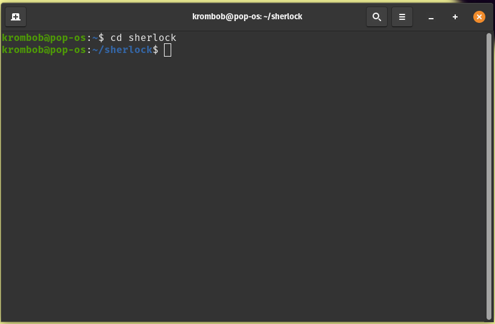
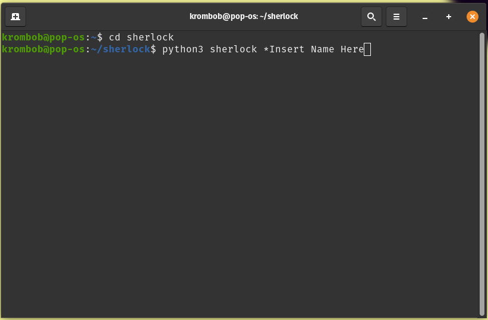
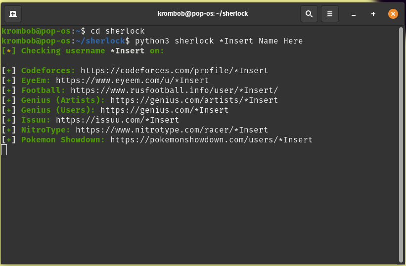
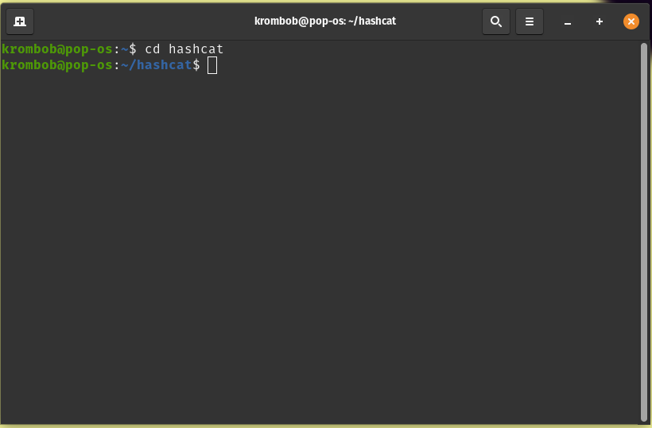
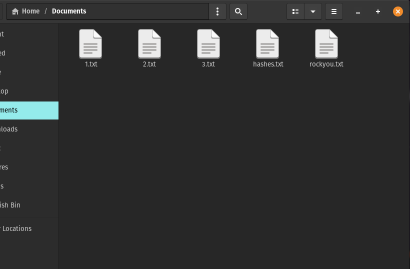
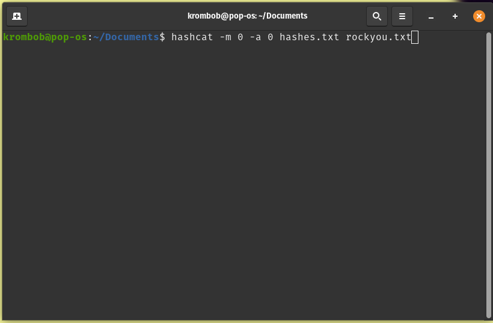
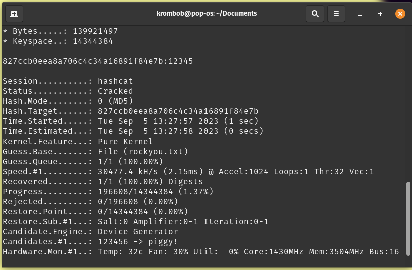

PENTESTING HACKING
Pentesting hacking is something i have only recently gotten into i started at first by using sherlock (A project you can find on github) to do basic recon. Since then i have fully moved over to linux and i have learnt how to crack password and all sorts of cool stuff. I highly suggest you try kali linux on a virtual machine and learn the basics. Linux is great for all things hacking and i have recently moved from windows to linux fully
Sherlock
Sherlock is a tool used for basic rocon this can help gather possible passwords and gain more into about the victim/client

This is the first step to using sherlock after cloning the git hub Repository. You need to change directory (cd) to be able to access the resources and use its contents

After that you need to input this code. This code tells python3 to run sherlock with the user next to it.For example this code will search the web with someone with the name: *Insert,Name,Here. Of course you can choose whatever name and would most likely get results.

After the command is entered sherlock will search for the user prompted. This may take a long time depending on the username nevertheless make youreself a nice cup off tea (or coffee) and watch sherlock do its thing!
HashCat
Hashcat is a password cracking tool, HashCat is able to crack alot of hashes the main ones being md5 and sha1 hashes. Hashes are passwords that go though a hashing algorithm, this makes them not a normal text making it harder for hackers to get your password.

Just like sherlock we start using hashcat by changing the directory to the file hashcat. But before we begin you will first need a wordlist. A worldlist is a long list of passwords that can be used to crack a hash. A very popular one is the rockyou database, Rockyou was a very big company back in the day and alot of the users passwords where leaked, but instead of using a hashing algorithm they stored it in plain text. Making everyones passwords easily visable.

make a hashes.txt file and put the new password hash in it using a md5 hash convertor. Also download the rockyou database as this is necessary for this to work.

after that put this code into youre linux/gitbash terminal. This code is asking hashcat to do the mode as 0 (md5 hash) and the attack as 0 (brute force using rock you). It will then run the hash against the rock you database and crack the password!

as you can see hashcat succesfully cracked the password from the hash i gave it! Hashcat figured out that the hash belonged to the password 12345. Isnt that just so crazy?